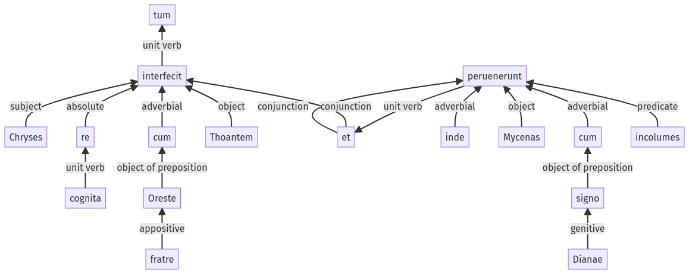

Hyginus, Fabulae, 121a.3.33-121a.3.49a
121a.3.1-121a.3.16a | 122a.1.20-122a.1.34a
Sentence 1201
121a.3.33-121a.3.49a
tum Chryses re cognita cum Oreste fratre Thoantem interfecit et inde Mycenas cum signo Dianae incolumes peruenerunt.
1 Chryses
2 re cognita
1 cum Oreste fratre Thoantem interfecit
1 et inde Mycenas cum signo Dianae incolumes peruenerunt
tum Chryses re cognita cum Oreste fratre Thoantem interfecit et inde Mycenas cum signo Dianae incolumes peruenerunt.
Highlighting:
- connecting words
- unit verb
- subject
- object
Color code:
- Independent clause (level 1, transitive verb)
- circumstantial participle (level 2, transitive verb)
- independent clause (level 1, transitive verb)
